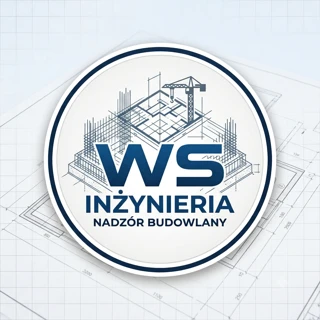

Kierownik kontraktu
Koordynacja realizacji,
terminów i rozliczeń.

WS INŻYNIERIASzczecin i okolice | zachodniopomorskie
Kierownik kontraktu. Kierownik budowy. Inspektor nadzoru.
Omów inwestycjęKoordynacja realizacji,
terminów i rozliczeń.
Prowadzenie robót,
dokumentacja i odbiory.
Kontrola jakości
i reprezentowanie inwestora.
PROWADZENIE INWESTYCJI
Od ustaleń umownych do odbioru końcowego.
Wsparcie inwestora lub wykonawcy w organizacji i prowadzeniu kontraktu budowlanego. Zakres współpracy dostosowany do etapu inwestycji oraz ustalonych obowiązków.
Narady, ustalenia techniczne i współpraca uczestników realizacji.
Monitorowanie terminów, zależności i zaawansowania robót.
Ustalenie zakresów, koordynacja zadań i kontrola ich realizacji.
Weryfikacja kosztorysów, ofert oraz rozliczeń wykonanych prac.
Analiza zakresu zmian, wycen i dokumentowania ustaleń.
Koordynacja dokumentacji powykonawczej i przygotowania odbiorów.
Łączę kontrolę wykonania robót z analizą dokumentacji, kosztów i ustaleń kontraktowych. Pomagam uporządkować proces realizacji — od koordynacji prac po dokumentację i rozliczenie.
Współpraca z inwestorami prywatnymi, przedsiębiorcami i wykonawcami. Szczecin i okolice | zachodniopomorskie.
Lokalizacja, etap i potrzebne wsparcie.
Obowiązki, terminy i zasady współpracy.
Dokumentacja, priorytety i plan działania.
KONTAKT
Podaj lokalizację, etap budowy i potrzebny zakres wsparcia. Ustalimy, jak mogę pomóc w realizacji.
Szczecin i okolice | zachodniopomorskie